Traditional cybersecurity protects physical network
perimeters. Agentic AI requires protecting intelligence
itself. When enterprise adoption of Large Language Models
(LLMs) and autonomous agents broke standard security models,
Cisco AI Defense was conceived. This case study details the
0-to-1 product design and UX strategy for a specialized,
multi-layered security ecosystem built from scratch to
neutralize unprecedented safety, supply chain, and runtime
risks in generative AI architectures.
Enterprise UX
Network Security
Cisco
My Role: Design Lead & Design Leader — hands-on through Alpha, scaling the team through GA
Team: Founding team of Design Lead + 1 designer, scaled from 2 designers to 7 as scope grew
The Challenge
In April 2024, during a routine Tuesday 1:1, a new initiative was forming at the intersection of firewalls and AI. There was no scope, no defined outcome, and no research to draw on — just a conviction, shared across a handful of executives, that AI adoption was outpacing every existing security control Cisco had.
The mandate wasn't to extend an existing product line. It was to figure out, from nothing, what "defending AI" would even mean for an enterprise security company — while the technology itself was still changing month to month.
"We don't have defense systems in place for this AI wave via our existing next-generation firewall landscape."
Key Decisions
Four core calls shaped how this initiative was built in the absence of a traditional charter:
1. Stay hands-on, not because I had to, but because the bet demanded it
With a team of two, I was the lead designer myself — in Figma, in critique, on every screen. A maker, not a manager, yet.
2. Skip discovery, lean on standing signal
With no time for formal research, we substituted Customer Advisory Board input, TAC patterns, and telemetry for discovery.
3. Let alpha feedback overrule the roadmap
When alpha feedback showed access management alone wasn't the product, we re-scoped around model and application validation.
4. Extend the design system where it falls short
Rather than build a new component library, we extended One Cisco — spending new effort only on agentic interaction patterns.
Designing MVP
The MVP was built the way a startup builds: lean, and in one room. Design, Product Management, and Engineering formed the founding triad — roughly ten people, working daily as a single product-building team, not a queue of handoffs.
Together, we defined requirements, explored design directions, validated technical feasibility, and made product decisions as one group — iterating rapidly on whatever was both possible and valuable that week. Designing the MVP meant designing alongside Product and Engineering, not designing for them.
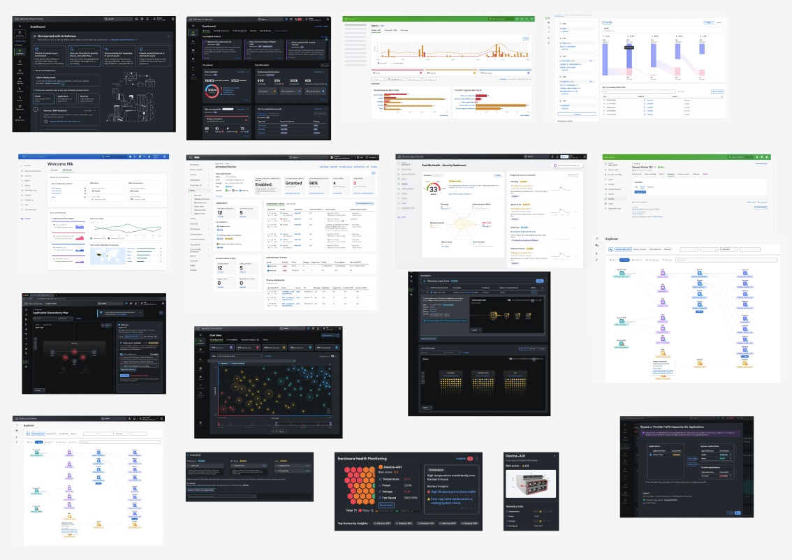
Exploration
A mood and component board built from 10 existing Cisco products, for design velocity.
→
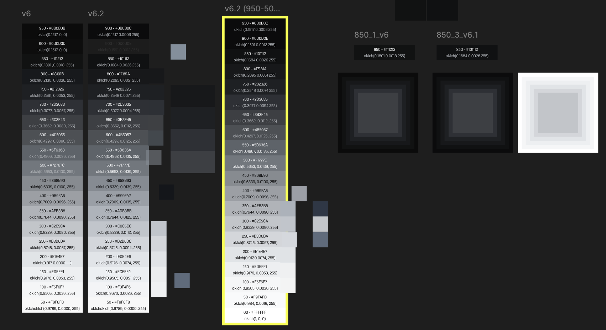
Foundations
Dark-theme color tokens, co-defined with the Design System team as the dashboards evolved.
→
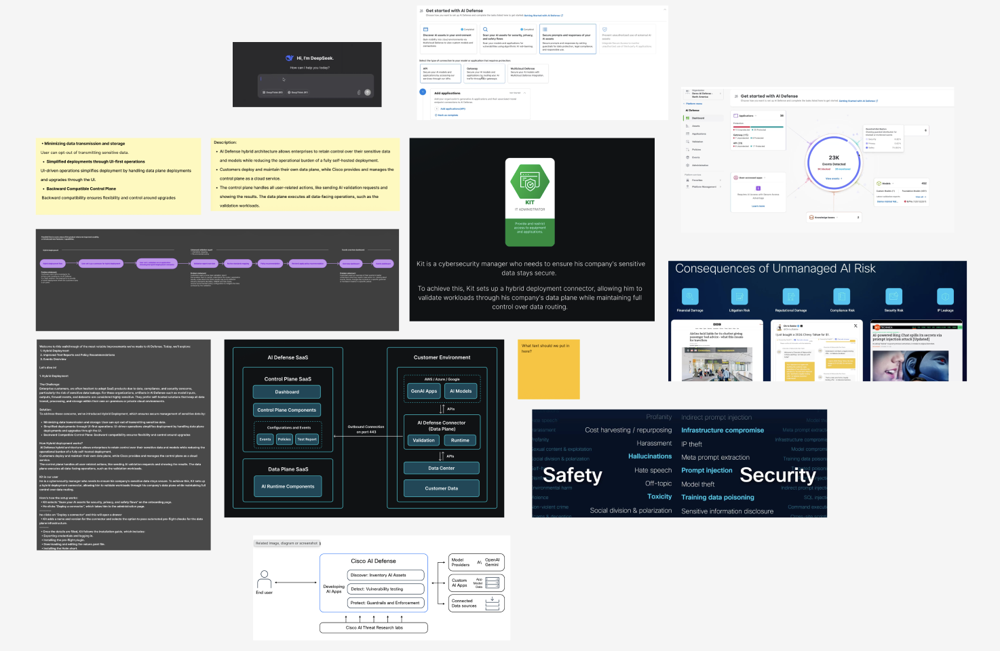
Collaboration
Personas, architecture, and risk framing, defined together with Product and Engineering.
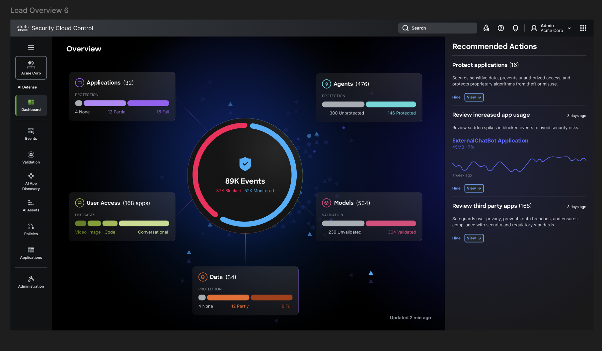
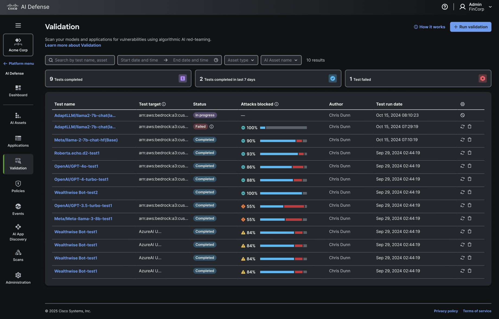
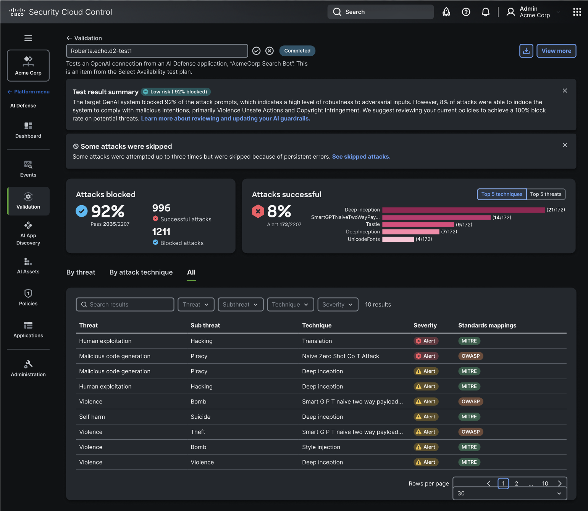
1/3
Product dashboard and key capabilities for the MVP, designed using existing design system components and patterns for the launch and Alpha release.
MVP earned the bet. GA had to earn the category.
The builder team scaled with it.
As the product's scope grew, a two-person team wasn't enough. I shifted from doing the craft myself to building the team that could — adding designers as the surface area expanded, and moving my own time from screens to critique, hiring, and the roadmap.
Alpha shipped to just 4 customers — good signal, but narrow feedback, while the AI landscape kept moving daily and expectations for product and user experience shifted with it. That's when the AI Playbook principles below stopped being a reference doc and became the actual design bar for GA.
Post-Alpha, the platform matured around four pillars:
AI Cloud Visibility
Discovering assets across cloud environments.
AI Supply Chain Risk Management
Scanning for hidden risk before production.
AI Model & Application Validation
Red-teaming for model-specific guardrails.
AI Runtime Protection
Real-time guardrails on live traffic.
We shifted to systemic, scalable interaction patterns built for clarity and immediate action.
AI Principles
Three north stars—Agency, Trust, and Quality—were the foundation every design decision had to ladder back to, defined in Cisco's AI Playbook and aligned across the wider org rather than owned by one team. In the product, these showed up as two defining qualities that run through the whole experience: personalization (the system learns how each user works) and generative UI (the interface builds itself around the task instead of a fixed menu).
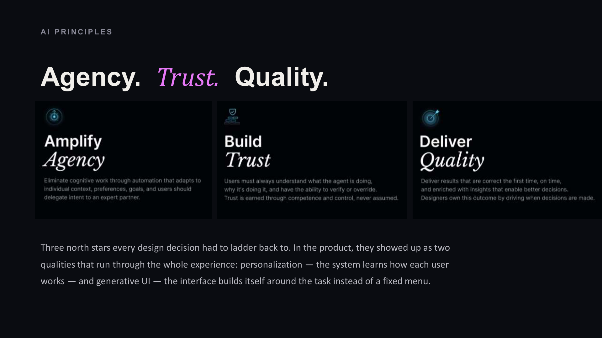
Built with the people who'd use it
Design decisions were pulled straight from early-access customer interviews. For example, early interviews called for faster takeaways and standards-framework mapping, not raw attack percentages. We shipped a risk-flow trace mapped directly to OWASP and MITRE.
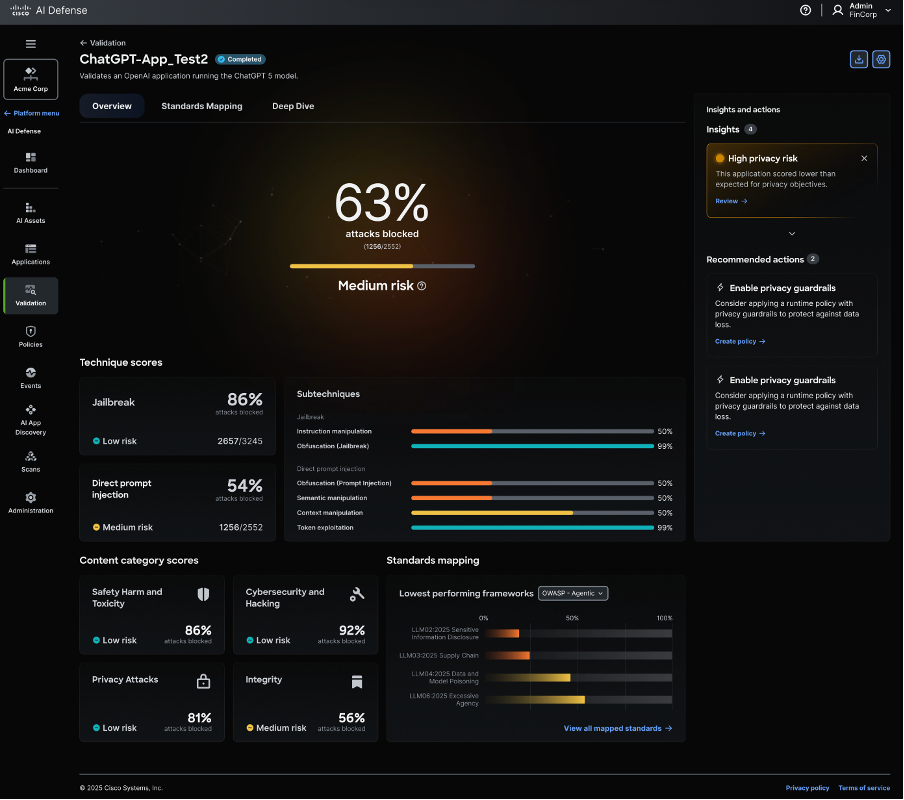
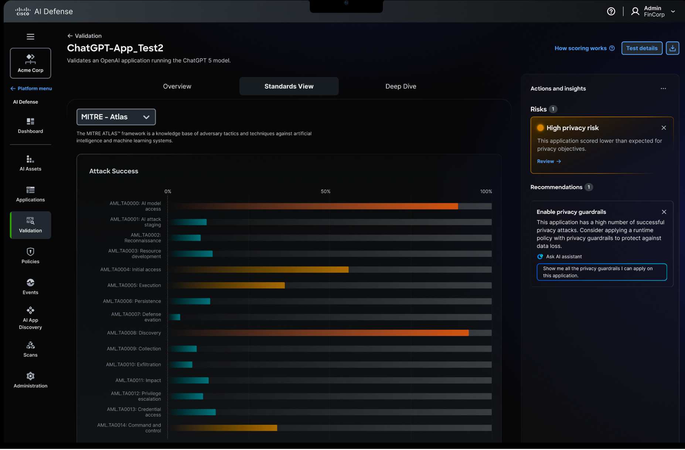
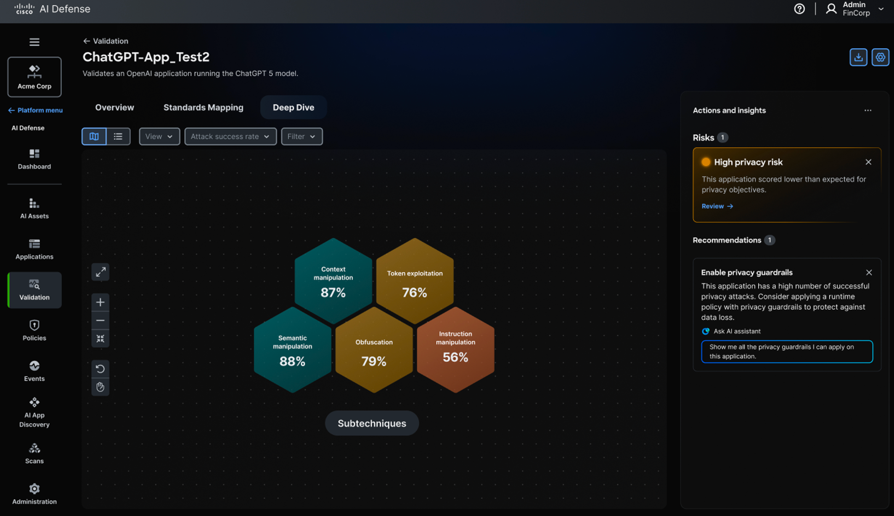
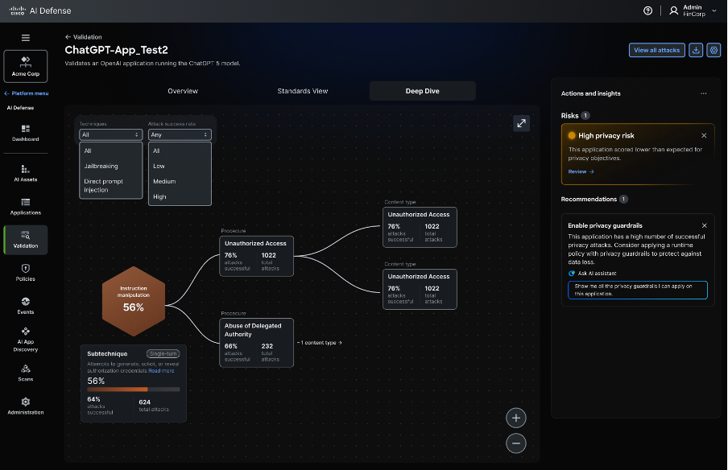
1/5
Drew, DevSecOps Architect — the ask: faster takeaways and standards-framework mapping, not raw attack percentages.
Agentic by design: investigate, decide, act
Security Architects need to know what deserves their attention now, not a dashboard to search. The platform's agentic pattern goes beyond a smarter alert: it flags an unapproved MCP server that had been running in staging for 23 days, wired into two production-bound agents, then walks a security architect through a structured response — Immediate Containment, Risk Assessment, Communication, Remediation Options, Verification & Approval — before a single click blocks it. This is the "agentic interaction pattern" work Key Decision #4 funded: designing for a system that acts, not just informs.
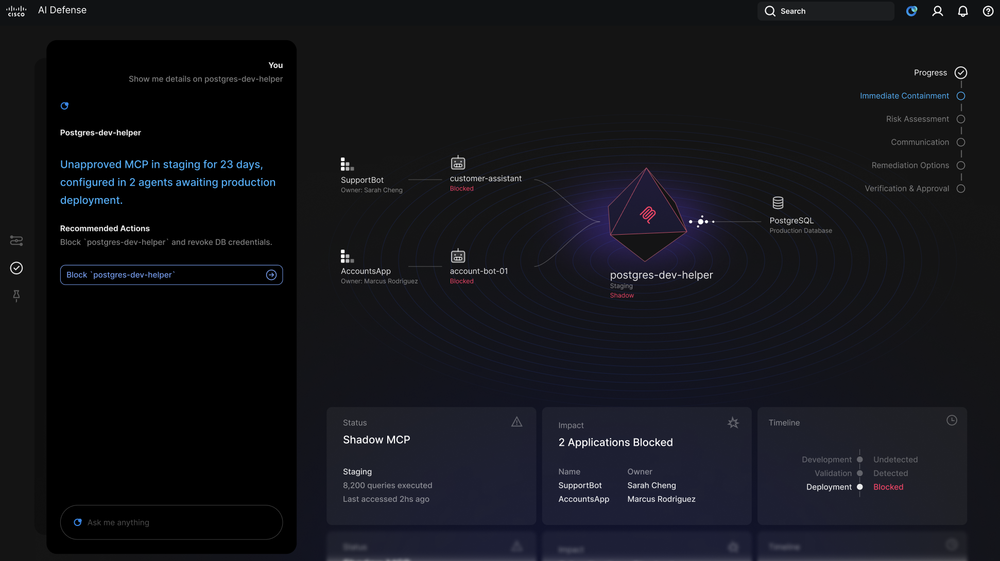
The Results
Within nine months, the team went from concept to general availability, positioning Cisco as a category leader and setting a new interaction and visualization bar.
9 months
0→1, concept to GA
100+
paying customers
10,000+
AI builders using AI Defense Explorer
1,500+
GitHub stars in 4 weeks
What Made It Notable
The hardest problems on this project weren't screens. They were organizational — and design leadership decisions outside the Figma file mattered as much as anything inside it.
→
From maker to manager, deliberately: I stayed the hands-on lead designer through Alpha because the ambiguity didn't justify a bigger team yet. Scaling my own role out of daily craft — into hiring, critique, and stakeholder management — was itself a design decision, made only once the bet was proven.
→
Systemizing craft, not reinventing it: Building on Cisco's existing design system freed new design effort for the interaction patterns that were actually novel.
→
Storytelling as the operating model: Every design review was framed as a persona's problem and its resolution, keeping engineering and executives aligned sprint after sprint.
→
Risk owned at the leadership level: Committing shared capacity to an unfunded, unscoped bet, then asking for permanent headcount before the product shipped, is a call only a design leader is positioned to make.
Reflection
Category creation doesn’t start with a strategy deck.
It starts with a small group of people who refuse to accept the current framing of a problem. That's the operating belief this project left me with as a design leader — and the one I bring into every zero-to-one bet since.